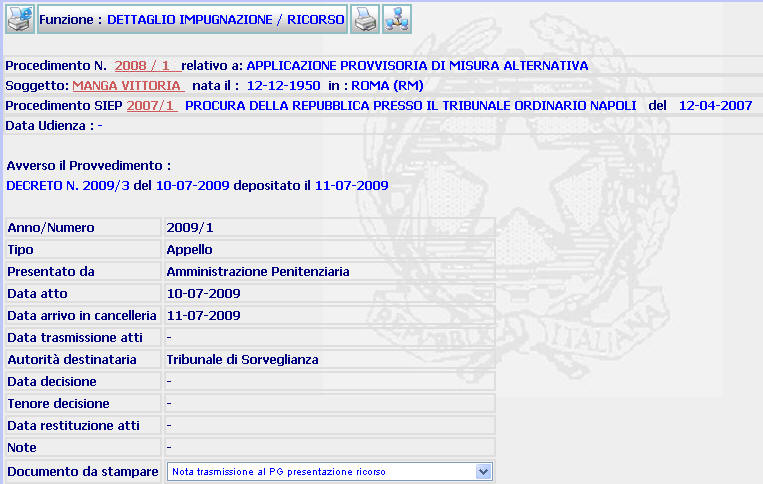

DETTAGLIO IMPUGNAZIONE/RICORSO: La funzione consente di visualizzare il dettaglio dell'impugnazione iscritta, di generare la stampa di una serie di atti collegati all'impugnazione stessa e di trasmettere telematicamente l'impugnazione al Tribunale di Sorveglianza (allo stato, invece, non è possibile operare la trasmissione telematica degli atti alla Corte di Cassazione).
LE MASCHERE VIDEO
La funzione viene realizzata attraverso la maschera seguente in cui compare il dettaglio del ricorso e dalla quale è possibile generare la stampa di una serie di atti collegati al ricorso stesso.

COME FARE PER ...
| Per visualizzare il dettaglio del procedimento Sius l'utente deve cliccare sul link relativo all'Anno/Numero del procedimento Sius evidenziato in rosso; |

| Per visualizzare il dettaglio del soggetto l'utente deve cliccare sul link relativo al cognome/nome del soggetto evidenziato in rosso; |

| Per visualizzare il dettaglio del procedimento Siep l'utente deve cliccare sul link relativo all' Anno/Numero del procedimento Siep evidenziato in rosso; |

| Per generare la stampa di uno dei documenti collegati all'impugnazione presenti nel sistema, l'utente deve: |
- Selezionare il documento prescelto tramite l'apposita tendina;
2. Selezionare il pulsante
di generazione stampa;
| Per trasmettere telematicamente l'impugnazione al Tribunale di Sorveglianza, l'utente deve effettuare l'operazione di Trasferimento Documento selezionando il pulsante |
CAMPI
Il campi da compilare è il seguente:
| Documento da stampare | Campo da utilizzare, tramite l'apposita tendina, per scegliere il documento del quale si desidera generare la stampa |
PULSANTI
Oltre al pulsante
 , facente parte del gruppo di
pulsanti di "Uso Comune" sono presenti i seguenti pulsanti:
, facente parte del gruppo di
pulsanti di "Uso Comune" sono presenti i seguenti pulsanti:
|
PULSANTE |
DESCRIZIONE |
|
|
Questo pulsante ha lo
scopo di generare la stampa del documento istruttorio richiesto |
|
|
Questo pulsante ha lo
scopo di consentire la trasmissione telematica del ricorso |